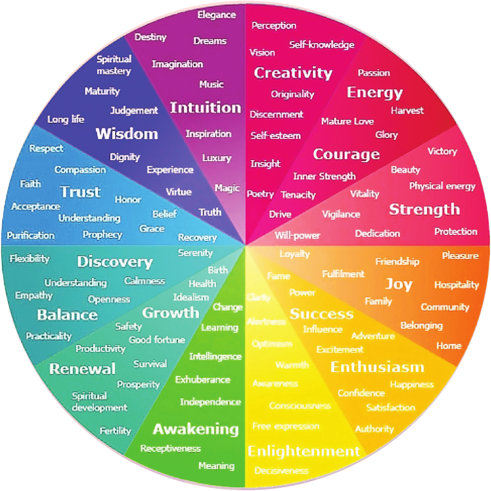

Every color sends a message. Choose yours.
The Color Workbook
Learn it · Choose it · Use it

Nancy Swanton · Abundant Home
Every color sends a message. Choose yours.
By the end of this workbook you will have a palette of four colors for one room, chosen for what you want in your life, and a plan for where each color goes.
Color is the fastest way to change how a room feels, and the easiest place to go wrong. It is not only about what looks pretty. Every color carries a feeling, and when you choose with intention, your room sends a clear message about who you are becoming.
Reds, oranges and yellows. They feel energetic and cozy, and they seem to come toward you. Lovely where people gather: dining rooms, kitchens, entries.
Blues, greens and purples. They feel calm and open, and they seem to step back. Lovely where you rest or focus: bedrooms, bathrooms, offices.
Warm and cool are relative. A green can look warm next to blue and cool next to yellow. It’s all about the company a color keeps.
| Hue | The color itself: red, blue, yellow. |
| Value | How light or dark it is. |
| Saturation | How intense it is. Vivid, or soft and muted. |
| Tint | A color with white added. Lighter, airier, more cheerful. |
| Shade | A color with black added. Deeper, richer, more serious. |
| Tone | A color with gray added. Calmer and easier to live with. |
You will rarely paint a wall the pure color you see on a color wheel. The magic is in the tints, shades and tones.
| Monochromatic | One color in light and dark versions. Calm and elegant. |
| Analogous | Neighbors on the wheel. Harmonious and easy, good for growth and peace. |
| Complementary | Opposites on the wheel. Lively, each makes the other stronger. |
| Triadic | Three colors evenly spaced. Vibrant and balanced. |
| Red | Energy, strength, passion |
| Blue | Trust, compassion, recovery |
| Green | Growth, health, safety |
| Yellow | Enlightenment, decisiveness, clarity |
| Gray | Calm, sophisticated, formal |
| Black | Elegance, strength, groundedness |
| White | Freshness, purity, simplicity |
| Brown | Warmth, comfort, stability |
These are starting points, not rules. Culture and memory change what a color means to each of us. What matters most is how a color feels to you.
Pick one room. How do you want to feel in it, and what do you want it to bring into your life? A calm bedroom? An energized office? Warm, or cool?
Find your desire on my color wheel (page 8) and sensory chart (page 9). Most people I work with want more of one of these four:
| Money | Green, gold, purple |
| Love | Pink, lavender, blue |
| Serenity | Pale blue, green, pink |
| Creativity | Orange, deep purple, yellow |
Wanting more than one thing? Give each desire its own room: green for money in your office, pink and red for love in your bedroom. Keep it simple, superstar.
Three of my clients, Molly, Debbie and Ann, all wanted more money. One wanted security and to take care of her family. One wanted independence and the finer things. One wanted the freedom to open her own flower shop. Same desire, different reasons, so each palette came out different.
Here is how one money palette of green, gold and purple can shift, just by changing tint and shade:
These are examples to show the idea. Your palette will be your own.
Once you know your colors, the free apps Coolors and Canva’s color palette generator make it easy to try combinations before you buy anything.
Your palette guides every choice in the room, but your lead color doesn’t have to be on the biggest thing. A throw pillow, lilacs in a vase, a painted door or one wall can be the reminder you need that you are the queen of your world.
Put your palette, your paint chips and your fabric scraps in a box or on a tray. Every new piece for the room gets held up against it, and against your Style Word, before it comes home.
Fill in your palette on page 7 and your room plan on page 10. Then start with one small change this weekend.
Bask in the beauty and power of color.
Want a designer’s eye on your room? Book a virtual room review with me at abundanthomedesign.com.
There is nothing you can’t do, be or have.
Color them in, or tape a paint chip in each. Write the color name or paint code underneath.
Find the feeling you want, then look at the color around it. Opposite sides of the wheel are complements; neighbors are analogous.

Color is one sense. Bring in the others: a scent, a texture, a sound that matches the feeling.
| Desire | Colors | Aromas | Chakras |
|---|---|---|---|
| Love & relationships | |||
| Passion / Energy | Red | Bergamot / Patchouli | Sacral / Root |
| Trust / Wisdom | Purple / Blue | Jasmine / Douglas fir | Third eye |
| Growth / Discovery | Blue / Green | Wintergreen / Sage | Heart / Throat |
| Joy / Enthusiasm | Orange | Eucalyptus / Peppermint | Solar plexus |
| Money & confidence | |||
| Courage / Strength | Red | Clove / Cinnamon / Ginger | Root / Sacral |
| Growth / Prosperity | Green | Cumin / Dill | Heart |
| Maturity / Stability | Deep purple | Rosemary / Oregano | Crown |
| Luxury / Abundance | Lavender / Red | Tobacco / Leather | Third eye |
| Serenity & wisdom | |||
| Balance / Compassion | Blue | Vetiver / Magnolia | Heart |
| Intelligence / Honor | Green / Yellow | Fennel / Grapefruit | Solar plexus |
| Truth / Acceptance | Deep blue purple | Frankincense / Coriander | Throat |
| Fulfillment / Idealism | Reddish purple | Cardamom / Thyme | Crown |
| Creativity & freedom | |||
| Exuberance | Orange | Tangerine / Tea tree | Sacral / Root |
| Magic / Consciousness | Purple / Yellow | Vanilla / Sandalwood | Third eye / Solar plexus |
| Change / Courage | Green / Blue | Peppermint / Yarrow | Heart |
| Poetry / Insight | Reddish purple | Rose / Lemon | Crown |
Where each color goes, plus a scent or texture from the sensory chart.
| Room | Desire | Colors | Where it goes | Scent or texture |
|---|---|---|---|---|